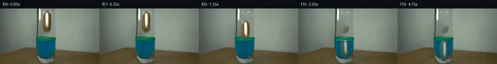

![首帧]()

Round 00
2026-11-05T06:27:29.986831+00:00像素候选变化代码 +172/−0inspection 更新
pixels fa587d6b9aad1321 · code c8a8bc045a1737e7
查看本轮 generate.py 真实 diff
--- previous/generate.py +++ current/generate.py @@ -0,0 +1,172 @@ +from pathlib import Path + +import cv2 +import numpy as np +from PIL import Image, ImageDraw + +from artifact_io import save + + +ROOT = Path(__file__).resolve().parent +W, H = 256, 144 + + +def soft_potato_mask(): + """Hand-fit alpha for the source potato, including its antialiased rim.""" + hi = np.zeros((H * 4, W * 4), np.uint8) + pts = np.array( + [ + (116, 7), (123, 6), (127, 9), (130, 16), (131, 28), + (130, 43), (127, 54), (124, 58), (116, 59), (112, 56), + (109, 48), (108, 36), (109, 21), (112, 11), + ], + np.int32, + ) * 4 + cv2.fillPoly(hi, [pts], 255, lineType=cv2.LINE_AA) + hi = cv2.GaussianBlur(hi, (0, 0), 1.15) + return cv2.resize(hi, (W, H), interpolation=cv2.INTER_AREA).astype(np.float32) / 255.0 + + +def clean_plate(source, alpha): + """Reconstruct only the small patch initially hidden by the potato.""" + hole = (alpha > 0.05).astype(np.uint8) * 255 + hole = cv2.dilate(hole, np.ones((3, 3), np.uint8), iterations=1) + # Telea interpolation follows the muted upper-glass surroundings and leaves + # the original glass walls, table, liquid, and all exterior pixels untouched. + return cv2.inpaint(source, hole, 4.0, cv2.INPAINT_TELEA) + + +def moved_potato(source, alpha, dx, dy, angle): + """Return a premultiplied, transformed potato layer and its alpha.""" + center = (120.0, 33.0) + m = cv2.getRotationMatrix2D(center, angle, 1.0) + m[:, 2] += (dx, dy) + premul = source.astype(np.float32) * alpha[..., None] + wp = cv2.warpAffine( + premul, m, (W, H), flags=cv2.INTER_LINEAR, + borderMode=cv2.BORDER_CONSTANT, borderValue=(0, 0, 0), + ) + wa = cv2.warpAffine( + alpha, m, (W, H), flags=cv2.INTER_LINEAR, + borderMode=cv2.BORDER_CONSTANT, borderValue=0, + ) + rgb = wp / np.maximum(wa[..., None], 1e-5) + return rgb, np.clip(wa, 0, 1) + + +def tint_below_water(rgb, alpha, surface_y=80): + yy = np.arange(H, dtype=np.float32)[:, None] + depth = np.clip((yy - surface_y) / 46.0, 0, 1) + wet = np.clip((yy - (surface_y - 1)) / 5.0, 0, 1) + amount = wet * (0.37 + 0.16 * depth) + water = np.zeros_like(rgb) + water[..., 0] = 3 + water[..., 1] = 76 + water[..., 2] = 98 + out = rgb * (1 - amount[..., None]) + water * amount[..., None] + # A faint cyan vertical caustic remains on the submerged texture. + xx = np.arange(W, dtype=np.float32)[None, :] + caustic = np.exp(-((xx - 116.5) / 2.0) ** 2) * depth * 8.0 + out[..., 1] += caustic * alpha + out[..., 2] += caustic * 1.2 * alpha + return np.clip(out, 0, 255) + + +def composite(base, rgb, alpha): + a = alpha[..., None] + return base.astype(np.float32) * (1 - a) + rgb * a + + +def draw_water_response(frame, t): + """Small analytic splash and damped ripples, all confined to the glass.""" + f = frame.copy() + # Colors are sampled/derived from the source water and glass highlights. + cyan = (42, 124, 137) + pale = (91, 148, 151) + dark = (0, 72, 91) + … diff truncated; 85 more lines …